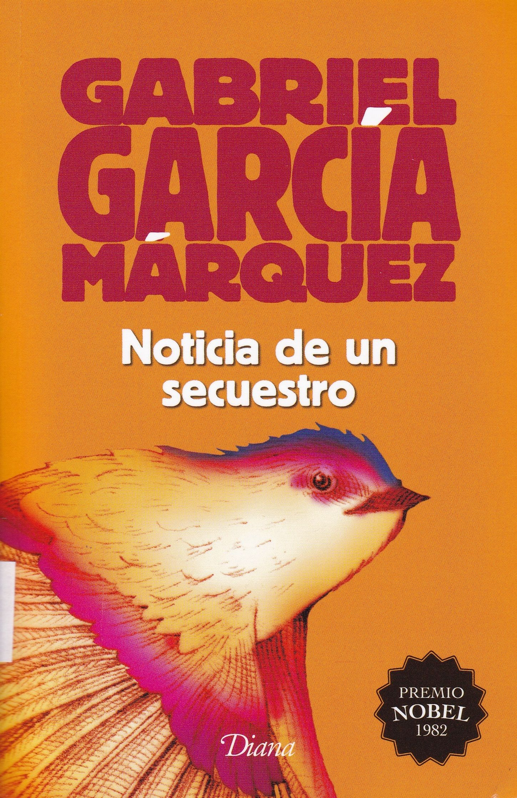

|

|
Noticia de un secuestro (1996)Noticia de un secuestro cuenta los secuestros de varios periodistas y familiares de importantes políticos colombianos a finales de 1990, un momento en que la guerra entre Pablo Escobar (y su grupo Los Extraditables) contra el Estado colombiano había alcanzado un punto crítico. Con el secuestro de Maruja Pachón, Diana Turbay, Francisco Santos, y otros notables, Escobar buscó presionar al entonces presidente César Gaviria para desmontar definitivamente la extradición y negociar un indulto para los narcos.Personajes
|
|---|
Leer este libro hoy sirve para recordar una época, no muy lejana, en la que las ciudades colombianas sintieron el drama de la guerra, después de varias décadas en que el conflicto se había circunscrito al ámbito rural y antes de que, a finales del siglo, se volviera al imaginario de que la violencia estaba solo en selvas y carreteras. La guerra de Escobar contra el régimen, por el contrario, se daba en calles y edificios de Medellín y Bogotá, con continuos asesinatos de policías y apocalípticos carros-bomba que todavía perturban el sueño de los sobrevivientes de esa época. La década de los noventa fue una época de intenso trabajo periodístico para García Márquez. La presión de los atentados terroristas de Escobar terminó por ayudar a abrir la posibilidad de negociaciones para gestionar su entrega a las autoridades, pues, como se dice en un momento del libro de García Márquez: “con las primeras bombas la opinión pública pedía la cárcel para los narcoterroristas, con las siguientes pedía la extradición, pero a partir de la cuarta bomba empezaba a pedir que los indultaran”. Noticia de un secuestro narra los pormenores de diez secuestros y, al mismo tiempo, hace el fresco de una terrible época (otra) de la historia colombiana. Haciendo gala de su reconocida capacidad para manejar decenas de personajes y de espacios, García Márquez cuenta en este libro la cotidianidad de los cautivos en sus miserables celdas al tiempo que recrea las conversaciones de emergencia en el Palacio de Nariño o en los apartamentos de lujo bogotanos.